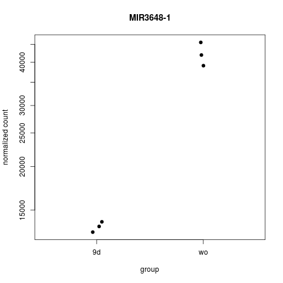

Here is an explanation of what you can expect back from an RNA seq analysis. Every project is different, so these may not apply to your project, or what you want may not be listed here. I can do more than is shown, just ask.
Each comparisson I do will have its own prefix, usually something like AvsB, denoting that I am comparing group A to group B. Here I explain the different suffixes you will recieve.
_results.txt
The most important file you will get back. This is a text file that contains the results of the differential expression analysis.
| GeneID | Gene | baseMean | stat | log2FoldChange | pvalue | padj |
|---|---|---|---|---|---|---|
| ENSG00000275708 | MIR3648-1 | 27811.5206 | 12.22073333 | 1.65246590 | 2.409017e‑34 | 4.752268e‑30 |
| ENSG00000149021 | SCGB1A1 | 178.959124 | 10.63627568 | 3.788769811 | 2.020440e‑26 | 1.992869e‑22 |
| ENSG00000221288 | MIR663B | 1410.38935 | 9.791781822 | 1.735266127 | 1.221249e‑22 | 8.030491e‑19 |
| ID of the gene, usually an Ensembl ID, but will vary depending on the reference used | Gene symbol, if available. Gene ID otherwise | The average normalized expression of all the samples. The actual value does not mean much. Higher values mean the gene was more highly expressed than a gene with a low number. This is mostly used as a caution if the fold change looks too big. | The test statistic used to calculate the p-value | The Log base 2 fold change. A value of 3 means the gene is 8 fold higher, a value of -1 means two fold down. To verify which is up and which is down, consult the sanity check figure. | p-value. Don't use this. | Benjamini-Hockberg corrected p-value. Use this. |
_significant.txt
This is a subset of the results file. It contains just those genes whith an adjusted p value less than 0.05. By default, I do not consider fold change in determining significance, though that can easily be incorporated if that is better for your project.
_sanity_check.png
This is a figure plotting the expression of the most significant gene for each sample. I include this so that it is easy to see which direction the fold change is going. The specific gene plotted will be the top gene in the _results.txt (and _significant.txt) file. Here you can see that gene MIR3648-1 has a Log2 Fold Change of 1.6. The sanity check clearly shows that means there is higher expression in the "wo" grop than the "9d" group. All positive fold changes will be the same, and negative fold changes are the reverse. Note that this figure is frequently plotted in log scale.
